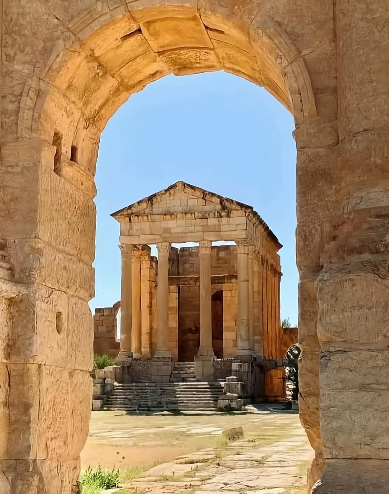

Le musée de Sbeïtla se trouve juste en face du site archéologique de Sufetula, ville romaine fondée au Ier siècle après J.-C. Il présente des objets découverts sur le site.
Voir sur la carteSa petite collection réunit des mosaïques, des sculptures et des stèles trouvées sur place, datant des époques romaine et byzantine.
Dès le IIIe siècle au plus tard, Sufetula est le siège d’un évêché et accueille des conciles régionaux. Ses églises le rappellent, comme la basilique de Vitalis, dont le baptistère est orné de mosaïques.

Seuls une vingtaine d’hectares sont visibles, alors que la cité antique en couvrait près de 50.